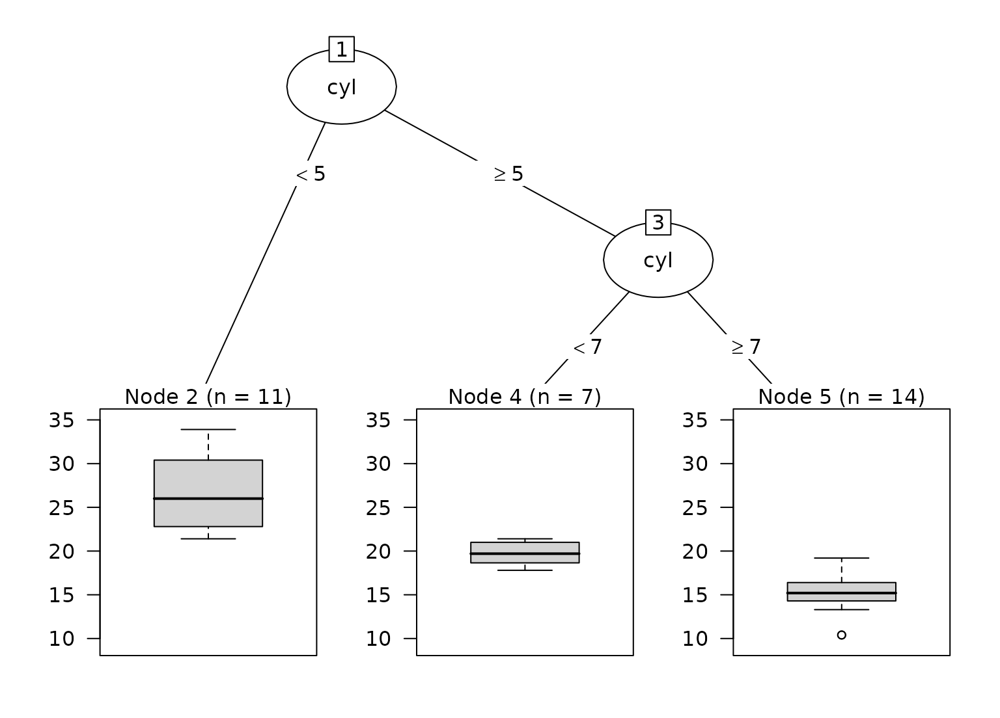

Convert a single tree from a catboost boosted tree model to a party object for use with partykit visualization and analysis tools.
Usage
# S3 method for class 'catboost.Model'
as.party(obj, tree = 1L, data, ...)Arguments
- obj
A
catboost.Modelobject from the catboost package.- tree
Integer specifying which tree to convert (1-based indexing, default is 1).
- data
data.frame containing the training data with the response variable included (required). catboost models do not store the original training data or response values. The first column that is not a predictor is used as the response.
- ...
Not currently used.
Details
The tree structure is obtained by saving the model in JSON format via
catboost::catboost.save_model(). Symmetric (oblivious) trees are expanded
into a binary tree and branches that cannot be reached are removed.
Numeric splits send observations with feature <= border to the left
child. One-hot categorical splits send the matching level to the right
child.
Categorical splits based on target statistics (CTRs) are converted to
factor splits using the approach described in
extract_rules.catboost.Model(). When a CTR uses a combination of
features, a factor with one level per combination is added to the data
(named, for example, g:h) and the split uses that factor.
If the model was trained without feature names, predictors are matched to
the columns of data by position.
Examples
if (rlang::is_installed("catboost")) {
pool <- catboost::catboost.load_pool(mtcars[, -1], label = mtcars$mpg)
set.seed(8153)
fit <- catboost::catboost.train(
pool,
params = list(
iterations = 3,
depth = 2,
thread_count = 1,
logging_level = "Silent",
allow_writing_files = FALSE
)
)
# The response is the first non-predictor column
party_tree <- as.party(fit, tree = 1L, data = mtcars)
print(party_tree)
plot(party_tree)
}
#>
#> Model formula:
#> ~cyl + disp + hp + drat + wt + qsec + vs + am + gear + carb
#>
#> Fitted party:
#> [1] root
#> | [2] cyl < 5: 26.664 (n = 11, err = 203.4)
#> | [3] cyl >= 5
#> | | [4] cyl < 7: 19.743 (n = 7, err = 12.7)
#> | | [5] cyl >= 7: 15.100 (n = 14, err = 85.2)
#>
#> Number of inner nodes: 2
#> Number of terminal nodes: 3
